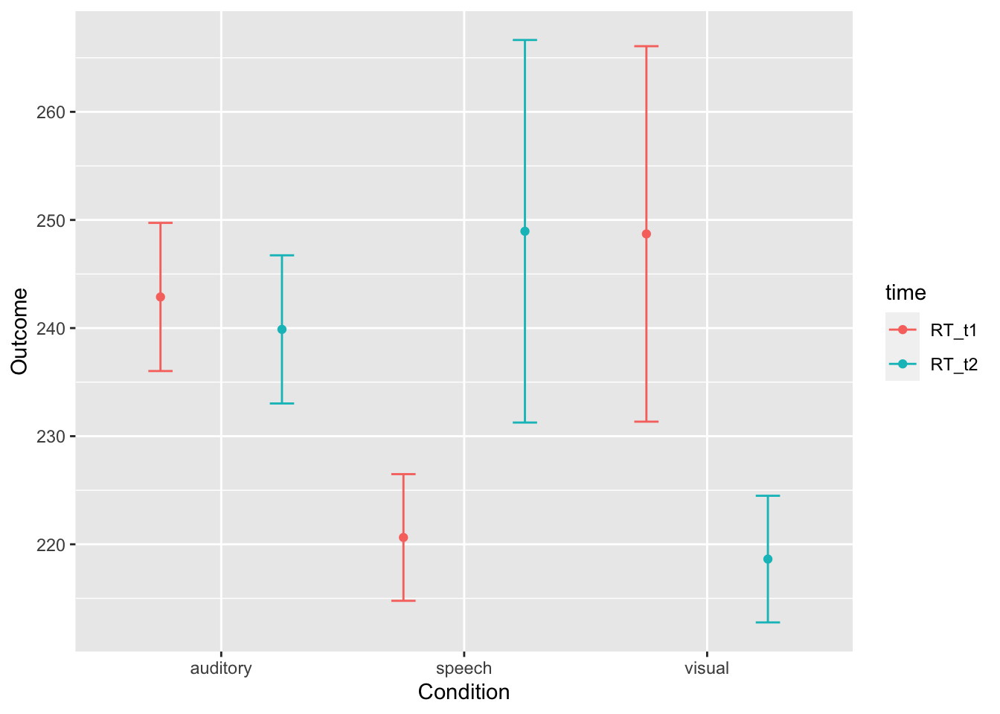

Chapter 13 Statistics Reference
13.1 One-Sample z-Test
13.1.1 Definition
The one-sample z-test tests the null hypothesis that a mean is equivalent to the mean of a known population.
13.1.2 Test Statistic
The test statistic is \(z\), which measures the distance between two means. In this case, one mean is from our sample and the other mean is a known constant. The sampling distribution of \(z\) is the normal distribution with a standard deviation defined by the formula for standard error (\(\sigma_{\bar{X}}\)).
\(z = \frac{\bar{X}-\mu}{\sigma_{\bar{X}}} = \frac{\bar{X}-\mu_{hyp}}{\frac{\sigma}{\sqrt{N}}}\)

Figure 13.1: The null hypothesis distribution of \(z\)
13.1.3 Assumptions & Required Data
- 1 variable measured using a quantitative, continuous scale
- The variable was measured for a sample that was taken randomly, with replacement, from a population
- The normality assumption, meaning at least one of these:
- \(N \ge 30\)
- The variable is normally distributed in the population
- The population mean, \(\mu\), is known.
- The population standard deviation, \(\sigma\), is known
13.1.4 When to use it
Use a \(z\)-test when you are comparing a single sample mean to a known population parameter and can meet the assumptions.
If the population standard deviation is unknown, or if the normality assumption cannot be met, consider a \(t\)-test.
13.1.5 Example
Imagine a high school has a graduation test with \(M = .80\) with a standard deviation (\(\sigma\)) of \(\sigma = .10\). A random sample of \(N = 35\) students at the high school participate in an after-school program aimed at increasing performance on the graduation test.
13.1.5.1 Data
The data are test scores from 35 students.
## [1] 1.06 0.85 0.89 0.80 0.80 0.90 0.93 0.80 0.92 1.10 0.99 0.86 0.93 0.95
## [15] 1.03 0.94 1.11 0.84 0.95 0.99 0.85 0.72 0.92 0.88 0.81 0.91 0.90 0.72
## [29] 0.99 0.84 0.93 0.96 0.85 0.83 0.96## [1] 0.906The students in the program took the test and performed higher than the population average (\(M=\)print(mean(sample))). Is there evidence that the after school program is effective?
13.1.5.2 Hypotheses
Because researchers are interested in detecting higher performance on the test, a one-tailed test is used to increase statistical power. If, instead, researchers wanted to see if the sample had higher or lower performance, a two-tailed test should be used.
$H_0=\mu\le.80$
$H_a=\mu\gt.80$13.1.5.3 Analysis
Set the alpha level. By convention, an alpha level of \(\alpha = .05\) will be used.
Assume the null hypothesis is true. Assuming the null hypothesis is true means that we need to determine the probability of obtaining a sample mean this distance from the population mean. We will determine this using the sampling distribution of the null hypothesis for \(z\) (the normal distribution).
Unlike later statistical tests, R does not provide a built-in \(z\)-test. This is actually a feature, as it lets us demonstrate the steps in more detail.
The most challenging part is the function pnorm(), which gives the area to the left of a score on the a standard normal distribution. By using the argument `lower.tail = FALSE, the function will give the area to the right of the score.
mu <- .80
sigma <- .10
n <- length(data)
z <- (mean(sample) - mu) / (sigma / sqrt(n))
z## [1] 1.06p_value <- pnorm(z, mean = 0, sd = 1, lower.tail = FALSE) # gives area to the right of the score, which is the p-value
p_value## [1] 0.1445723To visualize this result, we can graph the location of the test statistic in the sampling distribution, shading everything beyond the test statistic in one tail:
library(ggplot2)
ggplot(NULL, aes(c(-4,4))) +
geom_area(stat = "function", fun = dnorm, xlim = c(-4, z), alpha = 0.5,fill=alpha("grey",0)) +
geom_area(stat = "function", fun = dnorm, fill="blue", xlim = c(z, 4), alpha = 0.7)
The shaded area is well over 5 percent, showing visually that \(p>\alpha\).
13.1.5.4 Decision
Because \(p>{\alpha}\), the null hypothesis is retained and the results are inconclusive. These data do not provide evidence of effectiveness of the program.
13.1.5.5 Variations
This was a one-tailed test on the right side of the distribution. The use of
rnorm()would need to be adapted if the one-tailed test was on the left side of the distribution (to detect if scores were lower than the population). Simply omitlower.tail = FALSEto havernorm()calculate from the left side (lower tail).In a two-tailed test, the shading would need to be repeated on the left side, and the shaded area on both sides would need to be added together. You can save a step by knowing that each tail is always the same area. To convert this one-tailed p-value into a two-tailed p-value, you would need to double it, giving you a two-tailed p-value of
{r, echo=FALSE} print(p_value*2). When doing a two-tailed test, check to make sure you are calculating in the correct tail; if your two-tailed test had a sample mean lower than the population mean, you would want to shade/calculate to the left.If \(p < \alpha\), you would have rejected the null hypothesis and concluded that there was a difference between your sample mean and the population.
13.2 Correlation
13.2.1 Definition
A correlation analysis measures the strength and direction of a relationship between two variables. The hypothesis test for a correlation tests the null hypothesis that there is no linear relationship between two variables. This is also called a bivariate correlation (because it involves two variables) and the Pearson correlation coefficient.
13.2.2 Test Statistic
The test statistic is actually a \(t\) distribution calculated from the observed value of \(r\), which measures the strength and direction of the relationship. The statistic \(r\) has values \(-1\le{r}\le 1\), with -1 indicating a perfect negative relationship and +1 indicating a perfect positive relationship. \(r = 0\) indicates no relationship between the variables and is rarely observed to be exactly 0 in practice. To conduct a hypothesis test, \(r\) is converted to a value of \(t\) because this function of the sampling distribution of \(r\) follows a \(t\)-distribution:
\(t = r\sqrt{\frac{n-2}{1-r^2}}\)
This function can be reversed as \(r=\frac{t}{\sqrt{n-2+t^2}}\)

Figure 13.2: The null hypothesis distribution of \(t\) with values of df between 2 and 10. Notice how the curve is starting to converge at the higher values of df.
The \(t\) distribution is actually a family of distributions defined by degrees of freedom. Degrees of freedom is a concept that can be interpreted multiple ways. For now, it is sufficient to say that it is based on sample size. The value of degrees of freedom grows by 1 with each additional unit increased in the sample. In other words, the specific sampling distribution used in the hypothesis test depends on the sample size (and degrees of freedom).
13.2.3 Assumptions & Required Data
For more detail, see 8.12.
- 2 quantitative variables (interval or ratio), or one quantitative variable with a dichotomous (two possible values) variable. The later version is called a point-biserial correlation and is mathematically the same as the Pearson correlation coefficient. Note that this procedure is not appropriate for ordinal variables, and Spearman’s rank correlation coefficient should be used instead.
- Normality, meaning normal distribution of residuals.
- Linearity
- Homogeneity of variance (also called homoscedasiticty and equality of variance)
- No outliers
13.2.4 When to use it
Use a correlation when you want to detect a linear relationship between two variables.
13.2.5 Example
Navarro (2018) wanted to see if there was a relationship between hours slept in a night and their rating of grumpiness the next day.
13.2.5.1 Data
The data are two variables, one indicating sleep and the other indicating grumpiness. Data were collected for 100 nights.
## dan.sleep baby.sleep dan.grump day
## 1 7.59 10.18 56 1
## 2 7.91 11.66 60 2
## 3 5.14 7.92 82 3
## 4 7.71 9.61 55 4
## 5 6.68 9.75 67 5
## 6 5.99 5.04 72 6
## 7 8.19 10.45 53 7
## 8 7.19 8.27 60 8
## 9 7.40 6.06 60 9
## 10 6.58 7.09 71 10
## 11 6.49 11.68 72 11
## 12 6.27 6.13 65 12
## 13 5.95 7.83 74 13
## 14 6.65 5.60 67 14
## 15 6.41 6.03 66 15
## 16 6.33 8.19 69 16
## 17 6.30 6.38 73 17
## 18 8.47 11.11 52 18
## 19 7.21 5.51 61 19
## 20 7.53 6.69 53 20
## 21 8.00 9.74 54 21
## 22 7.35 9.02 63 22
## 23 6.86 6.44 74 23
## 24 7.86 9.43 56 24
## 25 4.86 3.46 82 25
## 26 5.87 6.32 72 26
## 27 8.40 7.95 59 27
## 28 6.93 7.69 66 28
## 29 7.21 7.45 60 29
## 30 6.99 7.56 67 30
## 31 8.17 7.95 44 31
## 32 7.85 11.61 53 32
## 33 6.27 4.70 76 33
## 34 8.66 8.52 41 34
## 35 4.98 4.70 86 35
## 36 6.19 8.32 60 36
## 37 6.41 9.38 63 37
## 38 4.84 4.18 89 38
## 39 7.03 5.98 61 39
## 40 7.66 9.29 57 40
## 41 7.51 6.01 59 41
## 42 7.92 10.54 60 42
## 43 8.12 11.78 48 43
## 44 7.47 11.60 53 44
## 45 7.99 11.35 50 45
## 46 5.44 5.63 72 46
## 47 8.16 6.98 57 47
## 48 7.62 6.03 60 48
## 49 5.87 4.66 70 49
## 50 9.00 9.81 46 50
## 51 8.31 12.07 58 51
## 52 6.71 7.57 68 52
## 53 7.43 11.35 58 53
## 54 5.90 5.47 71 54
## 55 8.52 8.29 52 55
## 56 6.03 6.80 74 56
## 57 7.29 10.63 59 57
## 58 7.32 8.59 59 58
## 59 6.88 7.82 67 59
## 60 6.22 7.18 67 60
## 61 6.94 8.29 61 61
## 62 7.01 11.08 64 62
## 63 7.20 6.46 61 63
## 64 6.30 3.25 61 64
## 65 8.72 9.74 54 65
## 66 7.82 8.75 62 66
## 67 8.14 11.75 52 67
## 68 7.27 9.31 64 68
## 69 6.70 7.73 65 69
## 70 7.55 8.68 65 70
## 71 7.38 9.77 57 71
## 72 7.73 9.71 59 72
## 73 5.32 4.17 79 73
## 74 7.86 10.18 53 74
## 75 6.35 9.28 67 75
## 76 7.11 7.23 61 76
## 77 5.45 6.38 82 77
## 78 7.80 9.20 68 78
## 79 7.13 8.20 67 79
## 80 8.35 10.16 54 80
## 81 6.93 8.95 53 81
## 82 7.07 6.80 62 82
## 83 8.66 8.34 50 83
## 84 5.09 6.25 80 84
## 85 4.91 6.75 91 85
## 86 7.03 9.09 62 86
## 87 7.02 10.42 64 87
## 88 7.67 8.89 57 88
## 89 8.15 9.43 54 89
## 90 5.88 6.79 72 90
## 91 5.72 6.91 78 91
## 92 6.66 6.05 63 92
## 93 6.85 6.32 59 93
## 94 5.57 8.62 74 94
## 95 5.16 7.84 76 95
## 96 5.31 5.89 79 96
## 97 7.77 9.77 51 97
## 98 5.38 6.97 82 98
## 99 7.02 6.56 55 99
## 100 6.45 7.93 74 10013.2.5.2 Hypotheses
Given their often-exploratory use, correlations are typically conducted as two-tailed tests. However, a one-tailed correlation could be conducted if researchers predict a direction for the effect.
Hypotheses are always written with population parameters (since we are making hypotheses about truth in the population, not what we have observed in our sample). The population parameter corresponding to the test statistic \(r\) is \(\rho\) (rho). The null is that there is no relationship. The alternative hypothesis is that there is a relationship.
\(H_0=\rho=0\)
\(H_a=\rho\ne0\)
13.2.5.3 Analysis
Set the alpha level. By convention, an alpha level of \(\alpha = .05\) will be used.
Assume the null hypothesis is true. Assuming the null hypothesis is true means that we need to determine the probability of obtaining an effect size (\(r\)) this strong at our sample size through random sampling from a population with effect size \(\rho=0\). We will determine this using the sampling distribution of the null hypothesis for \(t\).
There are several ways to generate correlations in R:
cor()will output just the correlation coefficientcor.test()will perform NHST and give a p-value
cor( x = parenthood$dan.sleep, y = parenthood$dan.grump )## [1] -0.903384cor.test(x = parenthood$dan.sleep, y = parenthood$dan.grump)##
## Pearson's product-moment correlation
##
## data: parenthood$dan.sleep and parenthood$dan.grump
## t = -20.854, df = 98, p-value < 2.2e-16
## alternative hypothesis: true correlation is not equal to 0
## 95 percent confidence interval:
## -0.9340614 -0.8594714
## sample estimates:
## cor
## -0.903384To visualize this result, we can graph a scatterplot, with observed values of one variable plotted against the observed value of the second variable:
oneCorPlot <- function(x,y,...) {
plot(x,y,pch=19,col=("black"),...)
}
oneCorPlot( parenthood$dan.sleep, parenthood$dan.grump,
xlab="Sleep (hours)", ylab="Grumpiness"
)
The magnitude of r (it’s value) indicates the strength of the relationship. The closer the value of \(r\) to \(\pm1\), the more closely the points hug a straight line. The line will have a positive slope if the relationship is positive and a negative slope if the relationship is negative.
13.2.5.4 Decision
Because \(p<{\alpha}\), the null hypothesis is rejected and we conclude that there is a relationship between sleep and grumpiness. Further, because the value of \(r\) is negative, the relationship between grumpiness and sleep is that higher amounts of sleep are associated with lower levels of grumpiness.
13.2.5.5 Variations
- If data are ordinal, Spearman’s rank order correlation can be calculated by adding the argument method = “separman” using the following syntax:
cor( x, y, method = "spearman")
In a two-tailed test, the shading would need to be repeated on the left side, and the shaded area on both sides would need to be added together. You can save a step by knowing that each tail is always the same area. To convert this one-tailed p-value into a two-tailed p-value, you would need to double it, giving you a two-tailed p-value of
{r, echo=FALSE} print(p_value*2). When doing a two-tailed test, check to make sure you are calculating in the correct tail; if your two-tailed test had a sample mean lower than the population mean, you would want to shade/calculate to the left.If \(p \ge \alpha\), you would have retained the null hypothesis and made no conclusion.
You can calculate a correlation matrix that shows all possible bivariate correlations from a dataframe. Simply include the entire dataframe as the argument instead of two variables, like this:
cor( x = parenthood)## dan.sleep baby.sleep dan.grump day
## dan.sleep 1.00000000 0.62794934 -0.90338404 -0.09840768
## baby.sleep 0.62794934 1.00000000 -0.56596373 -0.01043394
## dan.grump -0.90338404 -0.56596373 1.00000000 0.07647926
## day -0.09840768 -0.01043394 0.07647926 1.00000000When using a correlation matrix, p-values are not interpretable because the probability of a type I error on one or more of these correlations is higher than .05 (because the alpha level of .05 is used on each one, and many tests are being conducted).
13.3 Linear Regression
13.3.1 Definition
Linear regression creates a linear model that can be used to predict an outcome variable from one or more predictor variables. The hypothesis test for a linear regression occurs in two stages. The first stage, called the omnibus test, is a hypothesis test of the entire model. If this test is significant, researchers can conclude that the collection of variables significantly predicts the outcome. Assuming significance, the second stage follows in which each predictor variable is tested with a against the null hypothesis that its regression coefficient is zero.
13.3.2 Test Statistic
The omnibus test uses an \(F\)-test to test the null hypothesis that there is no linear relationship between the outcome variable and the linear combination of the predictor variables. Or, that the variance explained by the predictor variables is no more than the variance explained by the mean. Tests of each coefficient use \(t\)-tests. The statistics \(F\) and \(t\) are related such that \(t=\sqrt{F}\) and \(F=t^2\).
\[ F = \frac{\mbox{MS}_{model}}{\mbox{MS}_{residual}} \] \[ t = \frac{\hat{b}}{\mbox{SE}({\hat{b})}} \]
As with \(t\), \(F\) is a family of distributions defined around two degrees of freedom.

Figure 13.3: Graph of the sampling distribution of F used under Creative Commons License from Hartmann, K., Krois, J., Waske, B. (2018): E-Learning Project SOGA: Statistics and Geospatial Data Analysis. Department of Earth Sciences, Freie Universitaet Berlin.
13.3.3 Assumptions & Required Data
For more detail, see 8.12.
- A single quantitative outcome variable (interval or ratio), and one or more quantitative or dichotomous (two possible values) variables. Note that this procedure is not appropriate for ordinal variables.
- Normality of residuals
- Linearity
- Homogeneity of variance (also called homoscedasiticty and equality of variance)
- Uncorrelated predictors
- Residuals that are independent of each other
- No outliers
13.3.4 When to use it
Use a regression when you want to formulate and test a linear model, including mediating and moderating variables. Regression can also be used to run ANOVAs.
13.3.5 Example
The same data from the correlation guide will be used. Navarro (2018) wanted to see if hours slept in a night and hours the baby slept in a night could predict their rating of grumpiness the next day.
13.3.5.1 Data
The data are three variables, one indicating hours slept (predictor 1), one indicating the hours slept by the baby (predictor 2), and the other (the outcome) indicating grumpiness. Data were collected for 100 nights.
## dan.sleep baby.sleep dan.grump day
## 1 7.59 10.18 56 1
## 2 7.91 11.66 60 2
## 3 5.14 7.92 82 3
## 4 7.71 9.61 55 4
## 5 6.68 9.75 67 5
## 6 5.99 5.04 72 6
## 7 8.19 10.45 53 7
## 8 7.19 8.27 60 8
## 9 7.40 6.06 60 9
## 10 6.58 7.09 71 10
## 11 6.49 11.68 72 11
## 12 6.27 6.13 65 12
## 13 5.95 7.83 74 13
## 14 6.65 5.60 67 14
## 15 6.41 6.03 66 15
## 16 6.33 8.19 69 16
## 17 6.30 6.38 73 17
## 18 8.47 11.11 52 18
## 19 7.21 5.51 61 19
## 20 7.53 6.69 53 20
## 21 8.00 9.74 54 21
## 22 7.35 9.02 63 22
## 23 6.86 6.44 74 23
## 24 7.86 9.43 56 24
## 25 4.86 3.46 82 25
## 26 5.87 6.32 72 26
## 27 8.40 7.95 59 27
## 28 6.93 7.69 66 28
## 29 7.21 7.45 60 29
## 30 6.99 7.56 67 30
## 31 8.17 7.95 44 31
## 32 7.85 11.61 53 32
## 33 6.27 4.70 76 33
## 34 8.66 8.52 41 34
## 35 4.98 4.70 86 35
## 36 6.19 8.32 60 36
## 37 6.41 9.38 63 37
## 38 4.84 4.18 89 38
## 39 7.03 5.98 61 39
## 40 7.66 9.29 57 40
## 41 7.51 6.01 59 41
## 42 7.92 10.54 60 42
## 43 8.12 11.78 48 43
## 44 7.47 11.60 53 44
## 45 7.99 11.35 50 45
## 46 5.44 5.63 72 46
## 47 8.16 6.98 57 47
## 48 7.62 6.03 60 48
## 49 5.87 4.66 70 49
## 50 9.00 9.81 46 50
## 51 8.31 12.07 58 51
## 52 6.71 7.57 68 52
## 53 7.43 11.35 58 53
## 54 5.90 5.47 71 54
## 55 8.52 8.29 52 55
## 56 6.03 6.80 74 56
## 57 7.29 10.63 59 57
## 58 7.32 8.59 59 58
## 59 6.88 7.82 67 59
## 60 6.22 7.18 67 60
## 61 6.94 8.29 61 61
## 62 7.01 11.08 64 62
## 63 7.20 6.46 61 63
## 64 6.30 3.25 61 64
## 65 8.72 9.74 54 65
## 66 7.82 8.75 62 66
## 67 8.14 11.75 52 67
## 68 7.27 9.31 64 68
## 69 6.70 7.73 65 69
## 70 7.55 8.68 65 70
## 71 7.38 9.77 57 71
## 72 7.73 9.71 59 72
## 73 5.32 4.17 79 73
## 74 7.86 10.18 53 74
## 75 6.35 9.28 67 75
## 76 7.11 7.23 61 76
## 77 5.45 6.38 82 77
## 78 7.80 9.20 68 78
## 79 7.13 8.20 67 79
## 80 8.35 10.16 54 80
## 81 6.93 8.95 53 81
## 82 7.07 6.80 62 82
## 83 8.66 8.34 50 83
## 84 5.09 6.25 80 84
## 85 4.91 6.75 91 85
## 86 7.03 9.09 62 86
## 87 7.02 10.42 64 87
## 88 7.67 8.89 57 88
## 89 8.15 9.43 54 89
## 90 5.88 6.79 72 90
## 91 5.72 6.91 78 91
## 92 6.66 6.05 63 92
## 93 6.85 6.32 59 93
## 94 5.57 8.62 74 94
## 95 5.16 7.84 76 95
## 96 5.31 5.89 79 96
## 97 7.77 9.77 51 97
## 98 5.38 6.97 82 98
## 99 7.02 6.56 55 99
## 100 6.45 7.93 74 10013.3.5.2 Hypotheses
All \(F\)-tests have two-tailed, directionless hypotheses. Because the omnibus test uses the \(F\)-distribution, all regression omnibus tests are two-tailed.
The null is that the mean (which is the y-intercept, or \(b_0\)) predicts the outcome variable (\(Y_i\)) as well as the model. The alternative hypothesis is that the predictors add explained variance.
\[ H_0: Y_i = b_0 + \epsilon_i \] \[ H_a: Y_i = \left( \sum_{k=1}^K b_{k} X_{ik} \right) + b_0 + \epsilon_i \]
13.3.5.3 Analysis
Set the alpha level. By convention, an alpha level of \(\alpha = .05\) will be used.
Assume the null hypothesis is true. Assuming the null hypothesis is true means that we need to determine the probability of obtaining an effect size (in this case, the predictive power of our model over the null model with only the mean, measured using \(R^2\)) this strong at our sample size through random sampling from a population with no effect (a null model). We will determine this using an analysis of variance using the sampling distribution of the null hypothesis for \(F\).
regression.2 <- lm( formula = dan.grump ~ dan.sleep + baby.sleep,
data = parenthood )
summary(regression.2)##
## Call:
## lm(formula = dan.grump ~ dan.sleep + baby.sleep, data = parenthood)
##
## Residuals:
## Min 1Q Median 3Q Max
## -11.0345 -2.2198 -0.4016 2.6775 11.7496
##
## Coefficients:
## Estimate Std. Error t value Pr(>|t|)
## (Intercept) 125.96557 3.04095 41.423 <2e-16 ***
## dan.sleep -8.95025 0.55346 -16.172 <2e-16 ***
## baby.sleep 0.01052 0.27106 0.039 0.969
## ---
## Signif. codes: 0 '***' 0.001 '**' 0.01 '*' 0.05 '.' 0.1 ' ' 1
##
## Residual standard error: 4.354 on 97 degrees of freedom
## Multiple R-squared: 0.8161, Adjusted R-squared: 0.8123
## F-statistic: 215.2 on 2 and 97 DF, p-value: < 2.2e-16confint(regression.2, level = 0.95)## 2.5 % 97.5 %
## (Intercept) 119.930125 132.0010063
## dan.sleep -10.048710 -7.8517895
## baby.sleep -0.527462 0.5485109The omnibus test can be found in the last row as F-statistic. Here, the omnibus test was significant, \(F\)(2, 97) = 215.2, \(p\) < .001, \(R^2=0.82\), suggesting that the model significantly predicts grumpiness.
While a multiple regression with more than one predictor cannot be visualized easily, you could generate added variable plots for each predictor.
13.3.5.4 Decision
13.3.5.4.1 Omnibus Test
Because \(p<{\alpha}\), the null hypothesis is rejected and we conclude that grumpiness can be predicted by the linear combination of hours slept and hours the baby slept. However, we do not know which variable(s) significantly explain variance. Because we have a significant omnibus test, we are now justified in testing the coefficients.
13.3.5.4.2 Test of Coefficients
\(t\)-tests are conducted for each coefficient in the summary() table. The hours slept coefficient was a significant predictor, \(t\)(97) = -16.17, \(p\) < .001, 95% CI [-10.05, -7.85]. As hours slept increased, grumpiness decreased. The hours the baby slept was not a significant predictor, \(t\)(97) = -16.17, \(p\) < .001, 95% CI [-0.53, 0.55].
Note that the degrees of freedom are the residual degrees of freedom (the second number). \(F\) tests are always reported with the model degrees of freedom first (2) and the residual degrees of freedom second (97).
13.3.5.5 Variations
This guide will be updated to add assumption checking and diagnostics procedures for regression.
13.4 One-Sample t-Test
13.4.1 Definition
The one-sample t-test tests the null hypothesis that a mean is equivalent to the mean of a known population. Unlike the \(z\)-test, the \(t\)-test uses the sample deviation as an estimator for the population standard deviation.
13.4.2 Test Statistic
The test statistic is \(t\), which measures the distance between two means. In this case, one mean is from our sample and the other mean is a known constant.
\({t}=\frac{\bar{X}-\mu_0}{\frac{s}{\sqrt{n}}}\)
\(\sigma_{\bar{X}}=\frac{\sigma}{\sqrt{n}}\) (standard error of the mean)
Confidence interval (results in a lower and upper bound): \({CI}=\bar{X}\pm t_{critical} * \sigma_{\bar{X}}\)
Note that the confidence interval is given as a minimum and maximum value.
\(df=n-1\)

Figure 13.4: The null hypothesis distribution of \(t\) with values of df between 2 and 10. Notice how the curve is starting to converge at the higher values of df.
The \(t\) distribution is actually a family of distributions defined by degrees of freedom. Degrees of freedom is a concept that can be interpreted multiple ways. For now, it is sufficient to say that it is based on sample size. The value of degrees of freedom grows by 1 with each additional unit increased in the sample. In other words, the specific sampling distribution used in the hypothesis test depends on the sample size (and degrees of freedom).
13.4.3 Assumptions & Required Data
- 1 variable measured using a quantitative, continuous scale
- The variable was measured for a sample that was taken randomly, with replacement, from a population
- The normality assumption, meaning at least one of these:
- \(N \ge 30\)
- The variable is normally distributed in the population
- The population mean, \(\mu\), is known.
- The population standard deviation, \(\sigma\), is estimated from the sample standard deviation, \(s\).
13.4.4 When to use it
Use a \(t\)-test when you are comparing a single sample mean to a known population parameter and can meet the assumptions. This is nearly every situation in which you would use a \(z\)-test. In fact, as sample size surpasses 30, the \(t\) and \(z\) distributions converge.
13.4.5 Example
Imagine a high school has a graduation test with \(M = .80\) with a standard deviation (\(\sigma\)) of \(\sigma = .10\). A random sample of \(N = 35\) students at the high school participate in an after-school program aimed at increasing performance on the graduation test.
13.4.5.1 Data
The data are test scores from 35 students.
## [1] 0.81 0.73 0.87 0.93 0.93 0.86 1.00 0.72 1.06 0.78 0.86 1.00 0.79 0.75
## [15] 0.96 1.03 0.86 0.78 0.89 0.97 0.84 1.05 0.80 0.99 0.74 0.85 0.92 0.79
## [29] 1.05 0.71 0.88 0.92 0.95 0.89 1.00## [1] 0.8845714The students in the program took the test and performed higher than the population average (\(M=\)mean(sample)). Is there evidence that the after school program is effective?
13.4.5.2 Hypotheses
Because researchers are interested in detecting higher performance on the test, a one-tailed test is used to increase statistical power. If, instead, researchers wanted to see if the sample had higher or lower performance, a two-tailed test should be used.
\[ \begin{array}{ll} H_0 = \mu \le .80 \\ H_a = \mu > .80 \end{array} \]
13.4.5.3 Analysis
Set the alpha level. By convention, an alpha level of \(\alpha = .05\) will be used.
Assume the null hypothesis is true. Assuming the null hypothesis is true means that we need to determine the probability of obtaining a sample mean this distance from the population mean. We will determine this using the sampling distribution of the null hypothesis for \(t\).
t.test(sample, mu = .8, alternative = "greater") # two-sided, greater, or less##
## One Sample t-test
##
## data: sample
## t = 4.8632, df = 34, p-value = 1.291e-05
## alternative hypothesis: true mean is greater than 0.8
## 95 percent confidence interval:
## 0.8551663 Inf
## sample estimates:
## mean of x
## 0.8845714Note that in the syntax for the t-test, you can specify an alternative hypothesis of “two-sided” (two-tailed), “greater,” or “less.”
13.4.5.4 Effect Size
Cohen’s d is a measure of effect size for a t-test.
\(d=(\mu- \mu_0)/s\)
13.4.5.5 Decision
Because \(p < \alpha\), you reject the null hypothesis and concluded that there was a difference between your sample mean and the population.
13.4.5.6 Variations
This was a one-tailed test on the right side of the distribution. The use of
alternative = "greater"would need to be adapted if the one-tailed test was on the left side of the distribution (to detect if scores were lower than the population). Simply changealternative = "greater"to have"less"calculate from the left side (lower tail).In a two-tailed test, the shading would need to be repeated on the left side, and the shaded area on both sides would need to be added together. Simply change
alternative = "greater"to have"two-sided". If you omit thealternativeargument completely, the default is a two-tailed test.If \(p>{\alpha}\), the null hypothesis would have been retained and the results inconclusive.
13.5 Paired Samples T-Test
13.5.1 Definition
A paired samples t-test measures the difference between two means collected from a within-subjects (also called repeated measures) design. In a within-subjects design, each unit is measured exactly twice. A longitudinal study that measured participants at two points in time could be analyzed with a paired-samples t-test. The hypothesis test for this t-test tests the null hypothesis that there is no difference between the two measurements.
13.5.2 Test Statistic
The test statistic is \(t\), which measures the difference between the two measurements.
\[ t = \frac{\bar{D}}{\hat\sigma_D / \sqrt{N}} \]
Figure 13.5: The null hypothesis distribution of \(t\) with values of df between 2 and 10. Notice how the curve is starting to converge at the higher values of df.
The \(t\) distribution is actually a family of distributions defined by degrees of freedom. Degrees of freedom is a concept that can be interpreted multiple ways. For now, it is sufficient to say that it is based on sample size. The value of degrees of freedom grows by 1 with each additional unit increased in the sample. In other words, the specific sampling distribution used in the hypothesis test depends on the sample size (and degrees of freedom).
13.5.3 Assumptions & Required Data
- One variable measured twice, stored in a dataframe as two quantitative variables, each one reflecting one measurement (e.g., time1 and time2).
- The normality assumption, meaning at least one of these:
- \(N \ge 30\)
- The variable is normally distributed in the population
- Independence of observations. Participants do not affect each others’ scores.
- Homogeneity of variance (aka “homoscedasticity”). Population standard deviation is equivalent across the conditions.
13.5.4 When to use it
Use a paired-samples \(t\)-test when you are comparing exactly two related observations or have a within-subjects design with exactly two levels of the independent variable.
13.5.5 Example
13.5.5.1 Data
Did students’ test scores significantly differ between exam 1 and exam 2?
## exam1 exam2
## 1 1.02 0.96
## 2 1.04 0.93
## 3 0.83 0.95
## 4 0.89 1.02
## 5 0.88 0.89
## 6 0.88 0.98
## 7 0.96 1.09
## 8 0.95 0.90
## 9 0.96 0.84
## 10 0.89 0.93
## 11 1.08 0.81
## 12 0.79 0.93
## 13 0.78 1.03
## 14 0.94 1.04
## 15 0.79 0.78
## 16 0.72 1.05
## 17 0.79 0.94
## 18 1.23 0.90
## 19 0.80 0.95
## 20 0.90 0.74
## 21 1.08 1.06
## 22 0.93 0.82
## 23 0.96 0.90
## 24 0.87 0.83
## 25 0.88 1.04
## 26 0.99 0.78
## 27 0.90 0.89
## 28 0.95 0.83
## 29 0.70 0.85
## 30 0.81 0.92
## 31 0.90 0.82
## 32 0.83 0.90
## 33 0.96 0.88
## 34 1.04 0.97
## 35 0.77 1.0213.5.5.2 Hypotheses
\(t\)-tests can be one-tailed or two-tailed. A one-tailed \(t\)-test could be conducted if researchers predict a direction for the effect.
\[ \begin{array}{ll} H_0: & \mu_D = 0 \\ H_1: & \mu_D \neq 0 \end{array} \]
13.5.5.3 Analysis
Set the alpha level. By convention, an alpha level of \(\alpha = .05\) will be used.
Assume the null hypothesis is true. Assuming the null hypothesis is true means that we need to determine the probability of obtaining a sample mean this distance from the population mean. We will determine this using the sampling distribution of the null hypothesis for \(t\).
We need to take our wide format data and make it long format data.
# exams <- wideToLong(exams, within="time")
# exams <- sortFrame(exams, id)
head(exams)## exam1 exam2
## 1 1.02 0.96
## 2 1.04 0.93
## 3 0.83 0.95
## 4 0.89 1.02
## 5 0.88 0.89
## 6 0.88 0.98Then, we can run the \(t\)-test:
t.test(x = exams$exam1, y = exams$exam2, paired = TRUE)##
## Paired t-test
##
## data: exams$exam1 and exams$exam2
## t = -0.54231, df = 34, p-value = 0.5911
## alternative hypothesis: true difference in means is not equal to 0
## 95 percent confidence interval:
## -0.06510678 0.03767821
## sample estimates:
## mean of the differences
## -0.0137142913.5.5.4 Decision
The \(t\)-test was not significant, \(p\) = 0.6589, t(34) = 0.44. The results are inconclusive.
13.5.5.5 Effect Size
Paired samples \(t\)-tests have their own version of Cohen’s \(d\) that is called \(d_z\). The calculation is different, so it is important to label it as \(d_z\).
\(d_z = \frac{\mbox{mean difference}}{\mbox{standard deviation}}\)
\(d = d_z * \sqrt{2}\)
13.5.5.6 Power Analysis
In G*Power, select “t-tests” and then “Means: Difference between two dependent means (matched pairs).” Compute the required sample size by entering the effect size (\(d_z\)), tail(s), alpha, and desired power. Clicking “Determine” will give you a variety of ways to estimate \(d_z\).
13.6 Independent Samples \(t\)-Test
This section is still under construction. For now, please refer to the regular chapter on \(t\)-tests.
13.6.1 Definition
An independent samples \(t\)-test measures the difference between two means collected from a between-subjects design. In a between-subjects design, the two samples are compared, often from two levels of a manipulation. The key difference from the within-subjects design is that the units (usually, that means participants) in a between-subjects design are independent (different people) and only measured once. When different groups in a study contain different units, a between-subjects design is being used.
13.6.2 Test Statistic

Figure 13.6: The null hypothesis distribution of \(t\) with values of df between 2 and 10. Notice how the curve is starting to converge at the higher values of df.
The \(t\) distribution is actually a family of distributions defined by degrees of freedom. Degrees of freedom is a concept that can be interpreted multiple ways. For now, it is sufficient to say that it is based on sample size. The value of degrees of freedom grows by 1 with each additional unit increased in the sample. In other words, the specific sampling distribution used in the hypothesis test depends on the sample size (and degrees of freedom).
13.6.3 Assumptions & Required Data
- Independence of observations – Normality as previously discussed; violations are a bigger problem if you also violate homogeneity of variance or have unequal sample sizes; the result is lower power
- Homogeneity of variance aka equality of variances aka homoscedasticity: Each group has same variance. This can be tested with Levene’s test.
13.6.4 When to use it
13.6.5 Example
13.6.5.1 Data
13.6.5.2 Hypotheses
13.6.5.3 Analysis
Set the alpha level. By convention, an alpha level of \(\alpha = .05\) will be used.
Assume the null hypothesis is true. Assuming the null hypothesis is true means that we need to determine the probability of obtaining an effect size (in this case, the predictive power of our model over the null model with only the mean, measured using \(R^2\)) this strong at our sample size through random sampling from a population with no effect (a null model). We will determine this using an analysis of variance using the sampling distribution of the null hypothesis for \(F\).
13.6.5.4 Decision
13.6.5.5 Effect Size
d using weighted (allows unequal sample size) and pooled (requires equal variance) standard deviation: different group sizes but same SDs - weighted average of sample variances. Same two variances but different means
13.6.5.6 Power Analysis
13.7 One-Way ANOVA
13.7.1 Definition
The analysis of variance (ANOVA) is an expansion of t-test to allow comparison of a categorical IV with more than two levels.
As with the other tests of group comparisons, ANOVA requires a continuous, quantitative DV variable.
ANOVA has two stages. The omnibus test tests the null that two or more groups have the same mean. If the omnibus test is significant, pairwise comparisons are the second step. There are two strategies for pairwise comparisons. Planned comparisons maximizes statistical power by only testing hypothesized pairwise comparisons. Post-hoc tests run statistical tests for every possible pairwise comparison and then makes some (or no) adjustment for the number of tests that have been run.
ANOVA solves the problem of inflated type I error that arises when running multiple t-tests. Every t-test has a testwise error rate equal to alpha. In other words, if we assume the null is true, what is the probability of rejecting the null on one t-test? It is alpha. If we assume the null is true, what is the probability of rejecting the null on at least one of a series of t-tests? It is higher than alpha. ANOVA solves the problem of a family or experimentwise error rate (the overall alpha level for a series of tests) by keeping the experimentwise error rate equal to .05. If you are curious, the experimentwise error rate is equal to:
\(EER = 1-(1-\alpha)^m\) where m is the number of tests.
\(m = \frac{k(k-1)}{2}\) where k is the number of levels of the IV.
13.7.2 Test Statistic
The test statistic for ANOVA is \(F\), which is equivalent to \(t^2\). Where \(t\)-tests measure variability using standard deviation/standard error, \(F\)-tests measure variability using variance.
F is a ratio of two kinds of variance, explained and unexplained. The variance formula could be described as the sum of squared mean differences (sum of squares) over degrees of freedom (df). Another name for a variance calculation is mean square. The explained variance is called mean square between-groups, and the unexplained variance is mean square within-groups. Because between and within are used to describe variance in ANOVA, it is helpful to memorize that between-groups variance is good/explained and within-groups variance is bad/unexplained. The denominator/within-groups variance is pooled variance; it is just the average variance of the groups. The variance of the group means is the numerator/between-groups variance. Think of the F ratio as a competition between these two kinds of variance.
\(F_{observed} = \frac{MS_{between}}{MS_{within}}\)
If the null is true, and all group means are the same, then the value of the F ratio will be near 1. As group differences increase, the value of F will increase.
\(F\) is a one-tailed distribution, meaning that the omnibus F test does not include direction (i.e., all ANOVA tests are two-tailed). Notice how the ratio of two kinds of variance can never be negative.
Figure 13.7: The null hypothesis distribution of \(F\) with values of df between F(4, 2) and F(10, 2).
Pairwise comparisons, whether planned or as post-hoc tests, are essentially just \(t\)-tests.
13.7.2.1 Repeated Measures ANOVA
Repeated measures ANOVA is an extension of the paired samples \(t\)-test to allow for within-subjects designs.
In a repeated measures ANOVA, variance due to individual differences is computed separately (i.e., how different were participants scores from each other?). The individual differences variance is subtracted from the error term. In other words, variability across different participants is removed from the denominator, thus raising the F value Therefore, when you observe large differences across participants, power is increased relative to the between-subjects version.
Practically, repeated measures ANOVA (and within-subjects design) requires fewer cases, but more time per case. You need fewer people, but more observations of them. Within subjects designs also are subject to:
Simple order effects. Which condition is first affects participants scores; practice effects are an example. The solution is counterbalancing.
Differential carryover effects are when the effect of one condition bleeds into the second, and the effect is asymmetrical because it happens more in one order of conditions than the other. Imagine a study of shocking images versus neutral images (B. H. Cohen (2013)). Participants may be more affected by the shocking images and that could alter their scores in the neutral image trial. In this situation, counterbalancing will not help.
13.7.3 Assumptions & Required Data
13.7.3.1 Between-Subjects ANOVA
- Independence of observations. Participants do not affect the measurement of each other. For example, if you conduct a study on workplace satisfaction with some participants from the same office, independence of observations is a vioalted assumption. Other techniques, such as hierarchical linear modeling (a series of regression equations) would be more appropriate. Aside from these types of situations, it is relatively easy to meet this assumption through careful research design.
- The normality assumption, meaning at least one of these:
- \(N \ge 30\)
- The variable is normally distributed in the population
- Independence of observations. Participants do not affect each others’ scores.
- Homogeneity of variance (aka “homoscedasticity”). Population standard deviation is equivalent across the conditions. This can be tested using Levene’s test. If this assumption is violated and group sizes are unequal, then a parametric ANOVA may not be appropriate. Alternatives for this case are Welch or Brown-Forsythe ANOVA. The syntax for Welch is
oneway.test(dataframe$dv ~ dataframe$iv, data = ex, na.action = na.exclude). - No outliers. Note our earlier guidance on balancing the impact of outliers with the need to maintain the sampling method.
13.7.3.2 Repeated Measures ANOVA
- Random sampling. Although this is always a concern for external validity, it is more important for a repated measures ANOVA because each unit is in both conditions. Thus, units act as their own control group.
- The normality assumption, meaning at least one of these:
- \(N \ge 30\)
- The variable is normally distributed in the population
- No outliers. Note our earlier guidance on balancing the impact of outliers with the need to maintain the sampling method.
- No subject x treatment interaction. This occurs when some participants respond differently to a treatment. Imagine a drug trial for people at various stages of an illness. If the pill is more effective at earlier stages and not at later stages, there will be an inflated Type II error rate. Repeated measures ANOVA assumes this is does not happen.
- Sphericity.
- It only applies when 3+ levels (\(k>2\)).
- Imagine you found the difference between a pair of levels (e.g., time1 - time 2) and then found the variance of those difference scores. If you did that for every pair of two levels, you would want each variance calculation to be equal.
- In case you are ever asked, sphericity guarantees no compound symmetry (homogeneity of variance and of covariance) and no additivity (a treatment x subject interaction).
- Sphericity is an assumption you need to care about, because violating it can inflate the F-ratio and Type I error rate.
- Use Wauchly’s \(W\) to test for sphericity. It gives a value of epsilon. 1.0 is perfect sphericity. If the significance test for \(W\) is not significant, you conclude you have met the assumption. However, this test is not powerful when sample size is small, so it can be helpful to also look at the value of epsilon.
- If sphericity is violated, you need to use an alternative statistic. Greenhouse Geisser is more common but conservative; Huynh and Feldt is more powerful when you are close to sphericity.
- Do not try different statistics and only test for sphericity after you have failed to reject the null. That is p-hacking.
13.7.4 When to use it
If you have a quantitative DV and a single, discrete IV with two or more levels, you can run an ANOVA.
13.7.5 Example 1: Between-Subjects
Researchers are interested in participants’ reaction times to three types of alert displays: a visual alert, an auditory alert, and a speech alert. They randomly assign participants to one of these three conditions. Therefore, this is a between-subjects experimental design.
13.7.5.1 Data
Complicating matters, our data in this example are starting off in the wrong format. This format is called wide. We have one column per condition. This means that each row contains the data for three participants. We need this reshaped into one row per participant, called long.
RT_visual <- c(218.24, 218.34, 229.05, 219.12, 218.42)
RT_auditory <- c(238.37, 249.06, 238.86, 248.76, 239.34)
RT_speech <- c(258.34, 228.62, 239.31, 259.14, 258.13)
id <- c(1:5)
dataframe <- data.frame(RT_visual, RT_auditory, RT_speech, id)
dataframe## RT_visual RT_auditory RT_speech id
## 1 218.24 238.37 258.34 1
## 2 218.34 249.06 228.62 2
## 3 229.05 238.86 239.31 3
## 4 219.12 248.76 259.14 4
## 5 218.42 239.34 258.13 5These data are in wide format (one column per condition). To use these data in a between-subjects ANOVA, we need them in long format (one row per participant).
The secret to this is naming the variables correctly. First, you need an id variable. Second, you should name all of your condition variables in this format: DV_level. In this example, our DV is reaction time (RT) and the levels are visual, auditory, and speech. wideToLong() is looking for this format or it won’t work.
library(lsr)
longdata <- wideToLong(dataframe, "condition")
longdata## id condition RT
## 1 1 visual 218.24
## 2 2 visual 218.34
## 3 3 visual 229.05
## 4 4 visual 219.12
## 5 5 visual 218.42
## 6 1 auditory 238.37
## 7 2 auditory 249.06
## 8 3 auditory 238.86
## 9 4 auditory 248.76
## 10 5 auditory 239.34
## 11 1 speech 258.34
## 12 2 speech 228.62
## 13 3 speech 239.31
## 14 4 speech 259.14
## 15 5 speech 258.13All of this was to illustrate that for a between-subjects ANOVA, we need long format data. To avoid having to reshape your data, it is helpful to collect between-subjects data already in long format. The condition variable is a hint that the data are in long format.
With that out of the way, we can now use our dataframe, longdata. First, we will descriptively look at the group means:
library(pastecs)
by(longdata$RT, longdata$condition, stat.desc) # show descriptive stats on our RT DV grouped by condition## longdata$condition: auditory
## nbr.val nbr.null nbr.na min max
## 5.000000e+00 0.000000e+00 0.000000e+00 2.383700e+02 2.490600e+02
## range sum median mean SE.mean
## 1.069000e+01 1.214390e+03 2.393400e+02 2.428780e+02 2.467781e+00
## CI.mean.0.95 var std.dev coef.var
## 6.851659e+00 3.044972e+01 5.518126e+00 2.271975e-02
## --------------------------------------------------------
## longdata$condition: speech
## nbr.val nbr.null nbr.na min max
## 5.0000000 0.0000000 0.0000000 228.6200000 259.1400000
## range sum median mean SE.mean
## 30.5200000 1243.5400000 258.1300000 248.7080000 6.2539039
## CI.mean.0.95 var std.dev coef.var
## 17.3636209 195.5565700 13.9841542 0.0562272
## --------------------------------------------------------
## longdata$condition: visual
## nbr.val nbr.null nbr.na min max
## 5.000000e+00 0.000000e+00 0.000000e+00 2.182400e+02 2.290500e+02
## range sum median mean SE.mean
## 1.081000e+01 1.103170e+03 2.184200e+02 2.206340e+02 2.109700e+00
## CI.mean.0.95 var std.dev coef.var
## 5.857467e+00 2.225418e+01 4.717434e+00 2.138126e-02library(ggplot2)
ggplot(longdata, aes(condition, RT)) + stat_summary(fun.y = mean, geom = "point") + labs(x ="Condition", y="Outcome") + stat_summary(fun.data = mean_cl_normal, geom = "errorbar", width= 0.2) + labs(x ="Condition", y="Outcome")## Warning: `fun.y` is deprecated. Use `fun` instead.And, we can create an interactive graph of the means using a package called Plotly. The error bars are 95% confidence intervals. I cannot embed Plotly in this book, but I can show you the syntax:
# install.packages("plotly")
# library(plotly)
# ggplotly(ggplot(longdata, aes(condition, RT)) + stat_summary(fun.y = mean, geom = "point") + labs(x ="Condition", y="Outcome") + stat_summary(fun.data = mean_cl_normal, geom = "errorbar", width= 0.2) + labs(x ="Condition", y="Outcome")) # Plotly shows hoverable data points on mouseoverA visual interpretation of this graph suggests that visual had the fastest reaction time, followed by auditory, and then speech. But are these significantly different from each other? We need to run the ANOVA to find out.
13.7.5.2 Hypotheses
\[ \begin{array}{ll} H_0: & \mu_{auditory} = \mu_{speech} = \mu_{visual} \\ H_1: & \mbox{the null is false} \end{array} \] #### Assumption Checking
library(car)
leveneTest(longdata$RT, longdata$condition, center = median)## Levene's Test for Homogeneity of Variance (center = median)
## Df F value Pr(>F)
## group 2 1.0249 0.3882
## 12Levene’s test is not significant, so we assume homogeneity of variance. However, I would be cautious about this interpretation because our sample size is small (\(N = 15\)). Further, the error bars in the graph looked different to me (and the confidence intervals were numerically different in the table). But because our sample sizes are equal, we will continue with this example.
13.7.5.3 Analysis
Set the alpha level. By convention, an alpha level of \(\alpha = .05\) will be used.
Assume the null hypothesis is true. Assuming the null hypothesis is true means that we need to determine the probability of obtaining an effect size (in this case, the ratio of explained to unexplained variance) this strong at our sample size through random sampling from a population with no effect (a null model). We will determine this using an analysis of variance using the sampling distribution of the null hypothesis for \(F\).
anovaModel <- lm(RT ~ condition, data = longdata) # note there is an na.action argument if you need to exclude missing data
summary(anovaModel)##
## Call:
## lm(formula = RT ~ condition, data = longdata)
##
## Residuals:
## Min 1Q Median 3Q Max
## -20.088 -3.778 -2.214 7.299 10.432
##
## Coefficients:
## Estimate Std. Error t value Pr(>|t|)
## (Intercept) 242.878 4.068 59.701 3.22e-16 ***
## conditionspeech 5.830 5.753 1.013 0.33090
## conditionvisual -22.244 5.753 -3.866 0.00224 **
## ---
## Signif. codes: 0 '***' 0.001 '**' 0.01 '*' 0.05 '.' 0.1 ' ' 1
##
## Residual standard error: 9.097 on 12 degrees of freedom
## Multiple R-squared: 0.6885, Adjusted R-squared: 0.6366
## F-statistic: 13.26 on 2 and 12 DF, p-value: 0.0009136anovaModel <- aov(RT ~ condition, data = longdata)
summary(anovaModel)## Df Sum Sq Mean Sq F value Pr(>F)
## condition 2 2195 1097.4 13.26 0.000914 ***
## Residuals 12 993 82.8
## ---
## Signif. codes: 0 '***' 0.001 '**' 0.01 '*' 0.05 '.' 0.1 ' ' 113.7.5.4 Omnibus Decision
The omnibus ANOVA was significant, \(F\)(2, 12) = 13.26, \(p\) < .001, \(\eta^2\) = .689. We can conclude there is some difference among these conditions. To determine which conditions are significantly different from the others, we need to perform post-hoc tests.
13.7.5.5 Multiple Comparisons
A significant \(F\)-test only tells us that at least one group is significantly different. Which groups are different from which groups? What are the directions of the effects (i.e., which mean is larger, and which is smaller)? This is purpose of multiple comparisons; we try to identify which mean differences reflect true effects.
There are multiple ways to do this; they differ in balance of Type I error control and power, but fundamentally are \(t\)-tests (as they always compare two means). You’ll need to consider multiple comparisons whenever you have more than one comparison of means. You do not need multiple comparisons with only two levels of the IV, as there is only a single comparison to make, and that one comparison is accomplished with the onmibus test.
There are two approaches to multiple comparisons:
Post-hoc tests (a posteriori): Post-hoc tests are protected in that they are only run after a significant \(F\) test. All are variations on a t-test with different adjustments to protect against the multiple t-test problem. Post-hoc tests are used whenever researchers want to examine all possible mean comparisons.
Planned comparisons (a priori): In a planned comparisons approach, the omnibus ANOVA can be skipped (although it usually is run anyway), and only test a subset of all possible comparisons are tested. Because you examine fewer comparisons, and your comparisons are not at all influenced by the data, you will examine fewer means and have the most power. For this to be meaningful, the researchers must declare their tested comparisons ahead of time and not alter the approach if undeclared comparisons turn out to be significant. Readers must either trust that researchers have done this faithfully, or preregistration would need to be used.
13.7.5.6 Post-Hoc Tests
Let’s explore the post-hoc test options, starting with the most liberal (least control of Type I error to maximize power) and ending with the most conservative (most control of Type I error at the cost of power).
13.7.5.6.1 Fisher’s Least Significant Difference (LSD)
Fisher’s protected \(t\) Tests is also known as Fisher’s Least Significant Difference (LSD). This involves running follow up t-tests using the \(MS_wn\) as a variance estimate. Essentially, you are running protected \(t\)-tests. The problem of inflated Type I error exists when your omnibus \(F\) is significant and there are many groups to compare (i.e., more than 3). It is the most liberal approach but maintains the most statistical power with 3 or fewer groups.
My recommendation is to use this approach if you have three or fewer groups.
13.7.5.6.2 Tukey method
Tukey’s Honestly Significant Difference (HSD) test or Tukey’s range test is a method that compares the size of mean differences on the logic that the largest mean differences are real effects. Tukey’s HSD is still just a t-test, but it has a correction for familywise error rate. Instead of \(t\), a similar statistic \(q_k\) (called the studentized range statistic) is computed, and a significance test is done using the \(q_k\) distribution. The \(q_k\) distribution depends on degrees of freedom (just like the t-test) but also incorporates \(k\), the number of groups that are being compared.
In all, Tukey gives you comparisons at a familywise error rate of .05. However, because you are peanlized for the number of comparisons you make, it can end up being too conservative, especially with many groups.
My recommendation is to use this approach for post-hoc testsing in between-subjects designs with more than 3 groups.
Tukey also has the homogeneity of variance assumption, so if that is violated and you have unequal group sizes, you may need to use an alternative statistic, such as Games-Howell or Fisher-Hayter. The larger point is that this list is not every possible approach to post-hoc testing. You can employ any post-hoc testing method you wish so long as you decide on your approach before starting your analysis and can make an argument for why you chose that particular method.
library(multcomp)## Loading required package: mvtnorm## Loading required package: survival## Loading required package: TH.data##
## Attaching package: 'TH.data'## The following object is masked from 'package:MASS':
##
## geyser# install.packages("multcomp")
hsdModel <- glht(anovaModel, linfct = mcp(condition = "Tukey"))
summary(hsdModel)##
## Simultaneous Tests for General Linear Hypotheses
##
## Multiple Comparisons of Means: Tukey Contrasts
##
##
## Fit: aov(formula = RT ~ condition, data = longdata)
##
## Linear Hypotheses:
## Estimate Std. Error t value Pr(>|t|)
## speech - auditory == 0 5.830 5.753 1.013 0.58282
## visual - auditory == 0 -22.244 5.753 -3.866 0.00576 **
## visual - speech == 0 -28.074 5.753 -4.880 0.00114 **
## ---
## Signif. codes: 0 '***' 0.001 '**' 0.01 '*' 0.05 '.' 0.1 ' ' 1
## (Adjusted p values reported -- single-step method)The Tukey post-hoc tests show that there was a significant difference between visual (\(M\) = 220.63, \(SD\) = 4.72) and auditory (\(M\) = 242.87, \(SD\) = 5.52) alerts, and between speech (\(M\) = 248.71, \(SD\) = 13.98) and visual alerts, but not between auditory and speech alerts.
13.7.5.6.3 Bonferroni method
This is the most conservative method of post-hoc tests. To keep the familywise error rate equal to alpha, we just divide alpha by the number of comparisons. If you make two comparisons, your new alpha level is \(\alpha = .025\). As you may imagine, this becomes very conservative as you increase the number of comparisons you need to make. But, in cases where you want the best control of Type I error, are not concerned about the loss of power, and/or are making this adjustment on a small number of tests, it can be simple to implement and useful. In statistical software, Bonferroni corrections are usually implemented by altering the \(p\)-value, not alpha, so you can still interpret the output with an alpha level of \(\alpha = .05\).
pairwise.t.test(longdata$RT, longdata$condition, paired = FALSE, p.adjust.method = "bonferroni")##
## Pairwise comparisons using t tests with pooled SD
##
## data: longdata$RT and longdata$condition
##
## auditory speech
## speech 0.9927 -
## visual 0.0067 0.0011
##
## P value adjustment method: bonferroniThe bonferroni post-hoc tests show that there was a significant difference between visual (\(M\) = 220.63, \(SD\) = 4.72) and auditory (\(M\) = 242.87, \(SD\) = 5.52) alerts, and between speech (\(M\) = 248.71, \(SD\) = 13.98) and visual alerts, but not between auditory and speech alerts.
13.7.5.6.4 Alternatives to Bonferroni method
Instead of “bonferroni,” you can choose another p.adjust.method argument of “holm,” “hochberg,” “hommel,” “BH,” “BY,” “fdr,” or “none.” The R documentation gives a nice summary of the choices and provides citations for further reading.
13.7.5.7 Planned Comparisons
As you have more groups in your study, you start to lose power by testing every possible combination. Sometimes, you are only interested in one or a few of the contrasts, or you might want to compare groups of means. For example, if you measure people’s mood in each month of the year (with 12 levels), you might want to compare spring measurements to fall measurements. Planned comparisons gives you more flexibility in the means you can test without a loss of statistical power for making all of the comparisons. There are caveats, though:
You need to specify the comparisons ahead of time. Your readers and reviewers need to be satisfied that you did specify the comparisons ahead of time.
You need to be interested in a subset of all possible comparisons. There is little point in a planned comparisons approach that tests every possible comparison.
You have to program the comparisons in R using user-defined contrast coding. Dummy coding is an example of contrast coding. User-defined contrast coding means you define each comparison using numerical codes. I will try to explain this briefly here, but we will give this topic more attention when we do factorial ANOVA. For now, just be aware that planned comparisons require contrast coding.
Imagine we have four levels of our IV: A, B, C, and D. We are interested a planned comparison of A vs B and C vs D. We give each group a coefficient (a weight) that defines if it is used in the comparison. We use a 0 to exclude the level from the comparison. We use a positive number to put it on one side of the comparison and a negative number to put it on the other side. An example may help:
| Comparison | A | B | C | D |
|---|---|---|---|---|
| A vs B | 1 | -1 | 0 | 0 |
| C vs D | 0 | 0 | 1 | -1 |
The table above defines two comparisons, one between A and B and a seond one between C and D.
There is one rule about writing these comparisons; they must be orthogonal (independent). You can verify that your comparisons are orthogonal by multiplying the coefficients down. That is, muliply the first A coefficient (1) by the second A coefficient (0). Then, add the products. Based on the table, that is \(1 * 0 + -1 * 0 + 0 * 1 + 0 * -1\), which gives a total of 0. The total should be zero for the comparisons to be orthogonal. If you have three coomparisons, you have to do this multiplication for every pair. Yes, it’s a bit of work, but this is the planning we sign up for when we do planned comparisons.
- The convention seems to be to ignore familywise error rate, which is only appropriate if you have a small number of planned comparisons. You may consider one of the adjustment methods, like Bonferroni, if you have many planned comparisons to test.
13.7.5.8 Effect Size
Because \(\eta^2 = R^2\), you can find and report \(\eta^2\) from the lm() function.
13.7.5.9 Power Analysis
In G*Power, select the F tests family, and then choose “ANOVA: Fixed effects, omnibus, one-way.”
The best way to estimate effect size is to rely on effect sizes in similar past research. You will commonly find eta squared (\(\eta^2\)) in published work, not effect size \(f\). However, you can convert eta squared to \(f\) to use in G*Power:
- Click “Determine.”
- Select the procedure of “Effect size from variance.”
- Select “Direct.”
- Enter a value for partial eta squared.
- Click “Calculate and transfer to main window.” Don’t miss this step. It is easy to forget to update the value of f in the input parameters. If you do not update that value, your power analysis will not use this new effect size.
One more (less common) option is to select “Effect size from means” in the “Determine” drawer to fill in the anticipated means to estimate effect size.
13.7.6 Example 2: Within-Subjects
This example is the same, but in this study, the researchers randomly assigned participants to one of these three condition orders. Participants completed a visual, auditory, and speech trial. Therefore, this is a within-subjects experimental design.
13.7.6.1 Data
If you run this analysis in SPSS or another package, it is more common to see it in wide format, with one row per participant, and each measurement represented by a separate column. That is how our data in this example started out:
RT_visual <- c(218.24, 218.34, 229.05, 219.12, 218.42)
RT_auditory <- c(238.37, 249.06, 238.86, 248.76, 239.34)
RT_speech <- c(258.34, 228.62, 239.31, 259.14, 258.13)
id <- c(1:5)
dataframe <- data.frame(RT_visual, RT_auditory, RT_speech, id)
dataframe## RT_visual RT_auditory RT_speech id
## 1 218.24 238.37 258.34 1
## 2 218.34 249.06 228.62 2
## 3 229.05 238.86 239.31 3
## 4 219.12 248.76 259.14 4
## 5 218.42 239.34 258.13 5These data are in wide format (one column per condition) in R, however, we still have to use the long format (one row per participant).
library(lsr)
longdata <- wideToLong(dataframe, "condition")
longdata## id condition RT
## 1 1 visual 218.24
## 2 2 visual 218.34
## 3 3 visual 229.05
## 4 4 visual 219.12
## 5 5 visual 218.42
## 6 1 auditory 238.37
## 7 2 auditory 249.06
## 8 3 auditory 238.86
## 9 4 auditory 248.76
## 10 5 auditory 239.34
## 11 1 speech 258.34
## 12 2 speech 228.62
## 13 3 speech 239.31
## 14 4 speech 259.14
## 15 5 speech 258.13I will omit the parts of the analysis that are the same in the within-subjects design. All the descriptive analysis is the same.
13.7.6.2 Hypotheses
Hypotheses are written the same as for a between-subjects design.
13.7.6.3 Analysis
We are using ezANOVA() in the ez package.
# install.packages("ez") # you may need to install the ez package
library(ez)
withinAnovaModel <- ezANOVA(data = longdata, dv = .(RT), wid = .(id), within = .(condition), type = 3)## Warning: Converting "id" to factor for ANOVA.withinAnovaModel## $ANOVA
## Effect DFn DFd F p p<.05 ges
## 2 condition 2 8 10.74292 0.005418832 * 0.6884996
##
## $`Mauchly's Test for Sphericity`
## Effect W p p<.05
## 2 condition 0.5783249 0.4398026
##
## $`Sphericity Corrections`
## Effect GGe p[GG] p[GG]<.05 HFe p[HF] p[HF]<.05
## 2 condition 0.7033956 0.01495468 * 0.9706036 0.005985676 *13.7.6.4 Sphericity Checking
We will need to diagnose sphericity. Fortunately, this is provided in the default output. The value of Mauchly’s \(W\) in this example is 0.59, which is not significant (\(p\) > .05), and I WILL report the statistics in the first table. Had this been significant, I could have reported Greenhouse and Geisser (GG; 1959) or Huynh and Feldt (HF; 1976) versions of the statistics. Remember, it is important to decide which approach you will take before examining the p-values.
13.7.6.5 Omnibus Decision
The omnibus ANOVA was significant, \(F\)(2, 8) = 10.74, \(p\) = .005, \(\eta^2_G\) = .689. We can conclude there is some difference among these conditions. To determine which conditions are significantly different from the others, we need to perform post-hoc tests.
13.7.6.6 Post-hoc Tests
The post-hoc test methods are the same, except set paired = TRUE, so that paired samples t-tests are used.
Tukey’s HSD assumes independence of observations and is not available for within-subjects designs.
13.7.6.7 Effect Size
The effect size statistic is called generalized eta squared (see also Bakeman, 2005). Note that this differs in its calculation from eta squared, so you should take care to label it with the \(_G\).
13.7.6.8 Power Analysis
In G*Power, select the F tests family, and then choose “ANOVA: Repeated measures, within factors.”
As this is a one-way, repeated measures ANOVA, you can enter effect size, alpha, and power. Then, set number of groups to 1 (as there is no between-subjects factor) and the number of measurements to the number of levels of the IV. The corr among rep measures is the estimated correlation between your measures (e.g., how well can you predict a participant’s time 2 score if you know their time 1 score). This can be hard to estimate, but it’s a good exercise to think about how large you expect these individual differences to be. The larger the correlation among measures, the more you gain by using a within-subjects design.
13.8 Factorial ANOVA
13.8.1 Definition
Including more than one independent variable (called a factor) in an analysis of variance (ANOVA) results in a factorial ANOVA.
Factorial ANOVA tests each of the factors individually, with results that are the same as if each factor was tested on its own one-way ANOVA. Factorial ANOVA adds a higher-level analysis, as well, called an interaction effect. Any two-way ANOVA (with two factors) has one potential interaction effect. A three-way ANOVA has four potential interaction effects. Imagine factors A (2 levels), B (3 levels), and C (2 levels). Such an ANOVA would be described as a 2 x 3 x 2 ANOVA. The factorial ANOVA would involve testing these omnibus effects:
Main effect of A
Main effect of B
Main effect of C
Interaction effect A x B
Interaction effect B x C
Interaction effect A x C
Interaction effect A x B x C
The three-way interaction is the highest order interaction. Order refers to the number of factors involved.
You can calculate the number of potential interation effects with the formula \(2^m-m-1\), where \(k\) is the number of factors. This calculation for three factors reveals the four potential interaction effects listed previously.
Each of these tests has stages. The omnibus test tests the null that two or more groups have the same mean. If the omnibus test is significant, pairwise comparisons are the second step. There are two strategies for pairwise comparisons. Planned comparisons maximizes statistical power by only testing hypothesized pairwise comparisons. Post-hoc tests run statistical tests for every possible pairwise comparison and then makes some (or no) adjustment for the number of tests that have been run.
13.8.2 Test Statistic
The test statistic for ANOVA is \(F\).

Figure 13.8: The null hypothesis distribution of \(F\) with values of df between F(4, 2) and F(10, 2).
Pairwise comparisons, whether planned or as post-hoc tests, are essentially just \(t\)-tests.
13.8.3 Between, Within, and Mixed ANOVA
Because different ANOVAs are used for between- and within-subjects designs, there are more possibilities of combinations with a factorial model. A factorial ANOVA can be a between-subjects factorial ANOVA when all factors are between-subjects, a repeated measures factorial ANOVA when all factors are within-subjects, or a mixed ANOVA when one or more factors are between-subjects and one or more factors are within-subjects.
13.8.4 Assumptions & Required Data
The assumptions for a factorial ANOVA match the underlying one-way ANOVAs. That is, if you have a between-subjects factor, you need to consider homogeneity of variance and the other assumptions for between-subjects ANOVA. If you have a within-subjects factor, you need to consider sphericity and the other assumptions for repeated-measures ANOVA.
13.8.5 When to use it
If you have a quantitative DV and two or more discrete IVs with two or more levels each, you can run a factorial ANOVA.
13.8.6 Example: Mixed ANOVA
Researchers are interested in participants’ reaction times to three types of alert displays: a visual alert, an auditory alert, and a speech alert. They randomly assign participants to one of these three conditions. Participants repeat the task two times, and researchers are interested if reaction time improves with practice. Therefore, this is a mixed design.
13.8.6.1 Data
I recommend starting with data formatted as follows:
All repeated measures should be wide, with one column for each level of the within-subjects factor. In this example, we have two levels, Time 1 and Time 2, so we need a column for each. If you have more than one within-subjects factor, you need a column for each cell. Imagine you had another factor, Factor B at levels 1 and 2. You would need the following columns: DV_time1_B1, DV_time1_B2, DV_time2_B1, DV_time2_B2. Our task is a bit simpler here, since we only have one within-subjects factor.
All between-subjects factors should be represented with grouping variables, resulting in wide data with one row per participant. In this example, we have a grouping variable called “modality” that specifies the participant’s between-subjects condition. If you have more than one between-subjects factor, you will need additional grouping variables.
In all, we have data that are in wide format with one row per participant. Note that if you were to use SPSS, this is the format required in SPSS, so it is common.
RT_t1 <- c(238.37, 249.06, 238.86, 248.76, 239.34, 218.24, 218.34, 229.05, 219.12, 218.42, 258.34, 228.62, 239.31, 259.14, 258.13)
RT_t2 <- c(235.37, 246.06, 235.86, 245.76, 236.34, 258.64, 228.42, 239.51, 259.94, 258.26, 216.24, 216.34, 227.05, 217.12, 216.42)
modality <- c(replicate(5, "auditory"), replicate(5, "speech"), replicate(5, "visual"))
id <- c(1:15)
dataframe <- data.frame(RT_t1, RT_t2, modality, id)
dataframe## RT_t1 RT_t2 modality id
## 1 238.37 235.37 auditory 1
## 2 249.06 246.06 auditory 2
## 3 238.86 235.86 auditory 3
## 4 248.76 245.76 auditory 4
## 5 239.34 236.34 auditory 5
## 6 218.24 258.64 speech 6
## 7 218.34 228.42 speech 7
## 8 229.05 239.51 speech 8
## 9 219.12 259.94 speech 9
## 10 218.42 258.26 speech 10
## 11 258.34 216.24 visual 11
## 12 228.62 216.34 visual 12
## 13 239.31 227.05 visual 13
## 14 259.14 217.12 visual 14
## 15 258.13 216.42 visual 15R requires our data in long format, so we will do that conversion first. We will also take this opportunity to properly set our grouping variables and participant ID variable to factors so that R treats them as categories.
# install.packages("tidyverse")
# install.packages("rstatix")
library(tidyverse)## Warning in (function (kind = NULL, normal.kind = NULL, sample.kind =
## NULL) : non-uniform 'Rounding' sampler used## ── Attaching packages ────────────────────────────────── tidyverse 1.3.1 ──## ✓ tibble 3.1.4 ✓ dplyr 1.0.7
## ✓ tidyr 1.1.3 ✓ stringr 1.4.0
## ✓ readr 2.0.1 ✓ forcats 0.5.1
## ✓ purrr 0.3.4## ── Conflicts ───────────────────────────────────── tidyverse_conflicts() ──
## x ggplot2::%+%() masks psych::%+%()
## x ggplot2::alpha() masks psych::alpha()
## x tidyr::extract() masks pastecs::extract()
## x dplyr::filter() masks stats::filter()
## x dplyr::first() masks pastecs::first()
## x dplyr::lag() masks stats::lag()
## x dplyr::last() masks pastecs::last()
## x dplyr::recode() masks car::recode()
## x dplyr::select() masks MASS::select()
## x purrr::some() masks car::some()library(rstatix)##
## Attaching package: 'rstatix'## The following object is masked from 'package:MASS':
##
## select## The following object is masked from 'package:stats':
##
## filter# Use gather() to convert data to long format
longdata <- gather(dataframe, key = "time", value = "RT", RT_t1, RT_t2)
longdata## modality id time RT
## 1 auditory 1 RT_t1 238.37
## 2 auditory 2 RT_t1 249.06
## 3 auditory 3 RT_t1 238.86
## 4 auditory 4 RT_t1 248.76
## 5 auditory 5 RT_t1 239.34
## 6 speech 6 RT_t1 218.24
## 7 speech 7 RT_t1 218.34
## 8 speech 8 RT_t1 229.05
## 9 speech 9 RT_t1 219.12
## 10 speech 10 RT_t1 218.42
## 11 visual 11 RT_t1 258.34
## 12 visual 12 RT_t1 228.62
## 13 visual 13 RT_t1 239.31
## 14 visual 14 RT_t1 259.14
## 15 visual 15 RT_t1 258.13
## 16 auditory 1 RT_t2 235.37
## 17 auditory 2 RT_t2 246.06
## 18 auditory 3 RT_t2 235.86
## 19 auditory 4 RT_t2 245.76
## 20 auditory 5 RT_t2 236.34
## 21 speech 6 RT_t2 258.64
## 22 speech 7 RT_t2 228.42
## 23 speech 8 RT_t2 239.51
## 24 speech 9 RT_t2 259.94
## 25 speech 10 RT_t2 258.26
## 26 visual 11 RT_t2 216.24
## 27 visual 12 RT_t2 216.34
## 28 visual 13 RT_t2 227.05
## 29 visual 14 RT_t2 217.12
## 30 visual 15 RT_t2 216.42# Tell R that ID and time are factors
longdata <- convert_as_factor(data = longdata, vars = c("id", "time", "modality"))
is.factor(longdata$time)## [1] TRUEis.factor(longdata$id)## [1] TRUEis.factor(longdata$modality)## [1] TRUEWith that out of the way, we can now use our dataframe, longdata. First, we will descriptively look at the group means:
# Show descriptive stats for each main effect and for the intneraction cells
library(pastecs)
by(longdata$RT, longdata$modality, stat.desc) # break by levels of modality## longdata$modality: auditory
## nbr.val nbr.null nbr.na min max
## 1.000000e+01 0.000000e+00 0.000000e+00 2.353700e+02 2.490600e+02
## range sum median mean SE.mean
## 1.369000e+01 2.413780e+03 2.391000e+02 2.413780e+02 1.719489e+00
## CI.mean.0.95 var std.dev coef.var
## 3.889754e+00 2.956642e+01 5.437501e+00 2.252691e-02
## --------------------------------------------------------
## longdata$modality: speech
## nbr.val nbr.null nbr.na min max
## 1.000000e+01 0.000000e+00 0.000000e+00 2.182400e+02 2.599400e+02
## range sum median mean SE.mean
## 4.170000e+01 2.347940e+03 2.287350e+02 2.347940e+02 5.682350e+00
## CI.mean.0.95 var std.dev coef.var
## 1.285437e+01 3.228910e+02 1.796917e+01 7.653164e-02
## --------------------------------------------------------
## longdata$modality: visual
## nbr.val nbr.null nbr.na min max
## 1.000000e+01 0.000000e+00 0.000000e+00 2.162400e+02 2.591400e+02
## range sum median mean SE.mean
## 4.290000e+01 2.336710e+03 2.278350e+02 2.336710e+02 5.899488e+00
## CI.mean.0.95 var std.dev coef.var
## 1.334557e+01 3.480396e+02 1.865582e+01 7.983798e-02by(longdata$RT, longdata$time, stat.desc) # break by levels of time## longdata$time: RT_t1
## nbr.val nbr.null nbr.na min max
## 15.000000 0.000000 0.000000 218.240000 259.140000
## range sum median mean SE.mean
## 40.900000 3561.100000 238.860000 237.406667 3.896232
## CI.mean.0.95 var std.dev coef.var
## 8.356587 227.709410 15.090043 0.063562
## --------------------------------------------------------
## longdata$time: RT_t2
## nbr.val nbr.null nbr.na min max
## 1.500000e+01 0.000000e+00 0.000000e+00 2.162400e+02 2.599400e+02
## range sum median mean SE.mean
## 4.370000e+01 3.537330e+03 2.358600e+02 2.358220e+02 4.049928e+00
## CI.mean.0.95 var std.dev coef.var
## 8.686231e+00 2.460287e+02 1.568530e+01 6.651331e-02by(longdata$RT, interaction(longdata$time, longdata$modality), stat.desc) # interaction cells (all combinations of modality and time)## interaction(longdata$time, longdata$modality): RT_t1.auditory
## nbr.val nbr.null nbr.na min max
## 5.000000e+00 0.000000e+00 0.000000e+00 2.383700e+02 2.490600e+02
## range sum median mean SE.mean
## 1.069000e+01 1.214390e+03 2.393400e+02 2.428780e+02 2.467781e+00
## CI.mean.0.95 var std.dev coef.var
## 6.851659e+00 3.044972e+01 5.518126e+00 2.271975e-02
## --------------------------------------------------------
## interaction(longdata$time, longdata$modality): RT_t2.auditory
## nbr.val nbr.null nbr.na min max
## 5.000000e+00 0.000000e+00 0.000000e+00 2.353700e+02 2.460600e+02
## range sum median mean SE.mean
## 1.069000e+01 1.199390e+03 2.363400e+02 2.398780e+02 2.467781e+00
## CI.mean.0.95 var std.dev coef.var
## 6.851659e+00 3.044972e+01 5.518126e+00 2.300389e-02
## --------------------------------------------------------
## interaction(longdata$time, longdata$modality): RT_t1.speech
## nbr.val nbr.null nbr.na min max
## 5.000000e+00 0.000000e+00 0.000000e+00 2.182400e+02 2.290500e+02
## range sum median mean SE.mean
## 1.081000e+01 1.103170e+03 2.184200e+02 2.206340e+02 2.109700e+00
## CI.mean.0.95 var std.dev coef.var
## 5.857467e+00 2.225418e+01 4.717434e+00 2.138126e-02
## --------------------------------------------------------
## interaction(longdata$time, longdata$modality): RT_t2.speech
## nbr.val nbr.null nbr.na min max
## 5.0000000 0.0000000 0.0000000 228.4200000 259.9400000
## range sum median mean SE.mean
## 31.5200000 1244.7700000 258.2600000 248.9540000 6.3716039
## CI.mean.0.95 var std.dev coef.var
## 17.6904084 202.9866800 14.2473394 0.0572288
## --------------------------------------------------------
## interaction(longdata$time, longdata$modality): RT_t1.visual
## nbr.val nbr.null nbr.na min max
## 5.0000000 0.0000000 0.0000000 228.6200000 259.1400000
## range sum median mean SE.mean
## 30.5200000 1243.5400000 258.1300000 248.7080000 6.2539039
## CI.mean.0.95 var std.dev coef.var
## 17.3636209 195.5565700 13.9841542 0.0562272
## --------------------------------------------------------
## interaction(longdata$time, longdata$modality): RT_t2.visual
## nbr.val nbr.null nbr.na min max
## 5.000000e+00 0.000000e+00 0.000000e+00 2.162400e+02 2.270500e+02
## range sum median mean SE.mean
## 1.081000e+01 1.093170e+03 2.164200e+02 2.186340e+02 2.109700e+00
## CI.mean.0.95 var std.dev coef.var
## 5.857467e+00 2.225418e+01 4.717434e+00 2.157685e-02And, we can create graphs of the means. Several versions of the graph are generated below to demonstrate options for customization.
# Plot the means of each cell with error bars
library(ggplot2)
ggplot(longdata, aes(modality, RT, color=time)) + stat_summary(fun = mean, geom = "point", position=position_dodge(1)) + stat_summary(fun.data = mean_cl_normal, geom = "errorbar", width= 0.2, position=position_dodge(1)) + labs(x ="Condition", y="Outcome")
# Change the colors
ggplot(longdata, aes(modality, RT, color=time)) + stat_summary(fun = mean, geom = "point", position=position_dodge(1)) + stat_summary(fun.data = mean_cl_normal, geom = "errorbar", width= 0.2, position=position_dodge(1)) + labs(x ="Condition", y="Outcome") + scale_color_manual(values=c("red", "blue", "green")) # Note that green is not needed because there are only two levels of time# Create greyscale plots in the classic style
ggplot(longdata, aes(modality, RT, color=time)) + stat_summary(fun = mean, geom = "point", position=position_dodge(1)) + stat_summary(fun.data = mean_cl_normal, geom = "errorbar", width= 0.2, position=position_dodge(1)) + labs(x ="Condition", y="Outcome") + scale_color_grey() + theme_classic() # Represent a factor across separate graphs using faceting
ggplot(longdata, aes(modality, RT)) + stat_summary(fun = mean, geom = "point", position=position_dodge(1)) + stat_summary(fun.data = mean_cl_normal, geom = "errorbar", width= 0.2, position=position_dodge(1)) + labs(x ="Condition", y="Outcome") + facet_wrap(~time) A visual interpretation of this graph suggests that visual had the fastest reaction time at both time1 and time2, followed by auditory, and then speech. Are these significantly different from each other? We need to run the ANOVA to find out. Is there an interaction? Meaning, is there a difference in the pattern of means between time1 and time2? We need to test the interaction effect to find out. Visually, the patterns look a bit different; visual reaction time is faster at time 2, for example.
13.8.6.2 Hypotheses
You need a set of hypotheses for each factor and one for the interaction. Note that the number of means depends on the number of levels for each factor.
For “factor A”:
\(H_0:\mu_{auditory}=\mu_{speech}=\mu_{visual}\)
\(H_a:H_0\text{ is false}\)
For “factor B”:
\(H_0:\mu_{time1}=\mu_{time2}\)
\(H_a:H_0\text{ is false}\)
For the interaction:
\(H_0:\text{there is no interaction between modality and time}\)
\(H_a:H_0\text{ is false}\)
13.8.6.3 Assumption Checking
Levene’s test for homogeneity needs to be done for the between-subjects factor.
Note that the default syntax of Levene’s test uses center = median, so it is technically the Brown-Forsythe-Test. Using center = mean is the original Levene’s test.
library(car)
leveneTest(longdata$RT, longdata$modality, center = median) # Levene's for the between-subjects factor, modality## Levene's Test for Homogeneity of Variance (center = median)
## Df F value Pr(>F)
## group 2 3.6939 0.03819 *
## 27
## ---
## Signif. codes: 0 '***' 0.001 '**' 0.01 '*' 0.05 '.' 0.1 ' ' 1Levene’s test is significant here, so we have violated the assumption of homogeneity of variance. But, because our sample sizes are equal, we will continue with this example.
Sphericity would need to be diagnosed for the within-subjects factor, but in this case, there are only two levels (time1 and time2). Therefore, sphericity does not apply. If it did, we would check it in the default ANOVA output.
13.8.6.4 Analysis
We need three omnibus tests here: the interaction effect, the main effect of modality, and the main effect of time. We will start with the first omnibus test, which is a test of the interaction effect.
An alpha level of \(\alpha = .05\) will be used.
We are using ezANOVA() in the ez package.
# install.packages("ez") # you may need to install the ez package
library(ez)
mixedANOVAmodel <- ezANOVA(data = longdata, dv = .(RT), wid = .(id), within = .(time), between = .(modality), type = 3)
print(mixedANOVAmodel)## $ANOVA
## Effect DFn DFd F p p<.05 ges
## 2 modality 2 12 2.2031501 1.531170e-01 0.146748695
## 3 time 1 12 0.2108988 6.542716e-01 0.009256567
## 4 modality:time 2 12 23.9066189 6.520841e-05 * 0.679300094ezANOVA gives us all three of our omnibus tests in one step. In this case, only the interaction effect is statistically significant.
13.8.6.4.1 Omnibus and Simple Effects for the Interaction
We will start the reporting of our results with the omnibus test for the interaction:
There was a significant interaction effect for modality and time, \(F\)(2, 12) = 23.90, \(p\) < .001, \(\eta^2_G\) = .679. We can conclude that the effect of time depends on modality.
Next, we need post-hoc tests done in a specific way, called tests of simple effects (also called simple main effects, which means the same thing). Simple effects are the comparison of two cells in the interaction. These cells must vary in only one variable. For example, the comparison of visual at time 1 to visual at time 2 is a simple effect. The comparison of visual at time 1 to auditor at time 2 is another simple effect. Compairing visual at time 1 to auditory at time 2 is not a valid simple effect, because both variables are changing across the comparison. Except that we are looking at simple effects, the multiple comparisons options and procedure is the same.
The approach to multiple comparisons is the same for each effect. We are introducing a new operator, %>%, called the pipe operator. It is an alternative syntax style for passing one function to another. So far, we have been largely storing the results of our functions in new variables and then using those variables as arguments in other functions. With the pipe operator, we do the same thing in one line of code. When you see the pipe operator, you could read it as “pass this result to…”
library(tidyverse)
simpleeffects <- longdata %>%
group_by(time) %>%
pairwise_t_test(RT ~ modality, p.adjust.method = "bonferroni")
simpleeffects## # A tibble: 6 × 10
## time .y. group1 group2 n1 n2 p p.signif p.adj
## * <fct> <chr> <chr> <chr> <int> <int> <dbl> <chr> <dbl>
## 1 RT_t1 RT auditory speech 5 5 0.00224 ** 0.00673
## 2 RT_t1 RT auditory visual 5 5 0.331 ns 0.993
## 3 RT_t1 RT speech visual 5 5 0.000379 *** 0.00114
## 4 RT_t2 RT auditory speech 5 5 0.146 ns 0.438
## 5 RT_t2 RT auditory visual 5 5 0.0034 ** 0.0102
## 6 RT_t2 RT speech visual 5 5 0.000225 *** 0.000674
## # … with 1 more variable: p.adj.signif <chr>The analysis of simple effects, with a Bonferroni adjustment for Type I error, showed a significant difference between auditory (\(M\) = 242.87, \(SD\) = 5.52) and speech (\(M\) = 220.63, \(SD\) = 4.72) at time 1, and between visual (\(M\) = 248.71, \(SD\) = 13.98) and speech at time 1. At time 2, the pattern was different, with a significant difference between auditory (\(M\) = 242.87, \(SD\) = 5.52) and visual (\(M\) = 218.63, \(SD\) = 4.72) and a significant difference between visual and speech (\(M\) = 248.95, \(SD\) = 14.25).
13.8.6.4.2 Omnibus main effect of Time
There was not a significant main effect for time, \(F\)(1, 12) = 0.21, \(p\) = .654, \(\eta^2_G\) = .009. We can make no conclusions about the effects of time collapsing across modality.
If there had been a significant effect for time, we would not have needed post-hoc testing with only two conditions. We could have simply interpreted the means.
13.8.6.4.3 Omnibus main effect of Modality including post-hoc tests
There was not a significant main effect for modality, \(F\)(2, 12) = 2.203, \(p\) = .153, \(\eta^2_G\) = .147. We can make no conclusions about the effects of modality collapsing across levels of time.
If there had been a significant effect for modality, we would have needed post-hoc testing. This effect was not significant so we stop here, but to show you how to do post-hoc testing, I am going to include the code.
pairwise.t.test(longdata$RT, longdata$modality, paired = FALSE, p.adjust.method = "bonferroni")##
## Pairwise comparisons using t tests with pooled SD
##
## data: longdata$RT and longdata$modality
##
## auditory speech
## speech 1.00 -
## visual 0.81 1.00
##
## P value adjustment method: bonferroniNotice that we used the same pairwise.t.test() function we have always used. When testing a main effect like this, we are ignoring the imapct of the other factor. For this reason, we omit mention of the time factor alltogether.
13.8.6.5 Effect Size
Eta squared (\(\eta^2\)) is the measure of effect size for each omnibus effect.
However, eta squared in an interaction would include variance for other effects in the denominator. Eta squared gets smaller when other factors and/or the interaction effect are significant, so we use a new measure of effect size, partial eta squared (\(\eta^2_{p}\)). Partial eta squared is calculated as follows:
\(\eta^2_{p} = \frac{\mbox{SS}_{effect}}{\mbox{SS}_{effect} + \mbox{SS}_{within}}\)
Therefore, partial eta squared is an estimate of the effect size for one effect on its own. This is a better measure to report in most factorial models.
Generalized eta squared is the same as partial eta squared for between-subjects factors, but it is not the same in the presence of a within-subjects factor. Unfortunately, the methods I am finding to calculate partial eta squared using ezANOVA are very cumbersome. For the time being, I would recommend reporting generalized eta squared from the ezANOVA procedure while recognizing its limitations.
Finally, you should be aware that eta squared is a biased estimator of effect size. While I still recommend reporting eta squared if only by convention, there are other measures of effect size. Omega squared (\(\omega^2\)) works like adjusted \(R^2\) to estimate population effect size by correcting for this bias.
13.8.6.6 Power Analysis
In G*Power, select the F tests family, and then choose “ANOVA: Special effects and interactions.”
There is no calculation for all the pieces at once. Instead, power is calculated once for each effect and once for the interaction. One strategy is to calculate power for each effect and then plan for the largest sample size to ensure all effects are sufficiently powered (I believe this will always be the highest order interaction).
You will need to enter the degrees of freedom. Here is how you calculate it:
The df for a factor is \(k - 1\), where \(k\) is the number of levels of that factor.
The df for an interaction effect is \((k_1-1)(k_2-1)(k_n-1)\), where \(k_n\) is the number of levels of factor number \(n\). You’ll need one of those terms for each factor. This example has three terms for three factors.
The number of groups is the number of cells in the model. A 2 x 2 ANOVA would have 4 cells. A 3 x 2 x 3 ANOVA would have 18 cells.